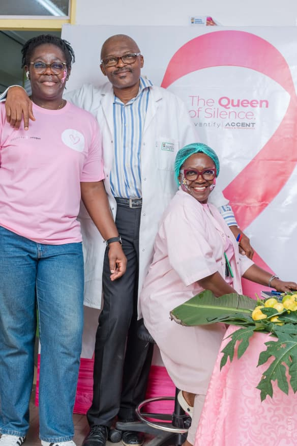
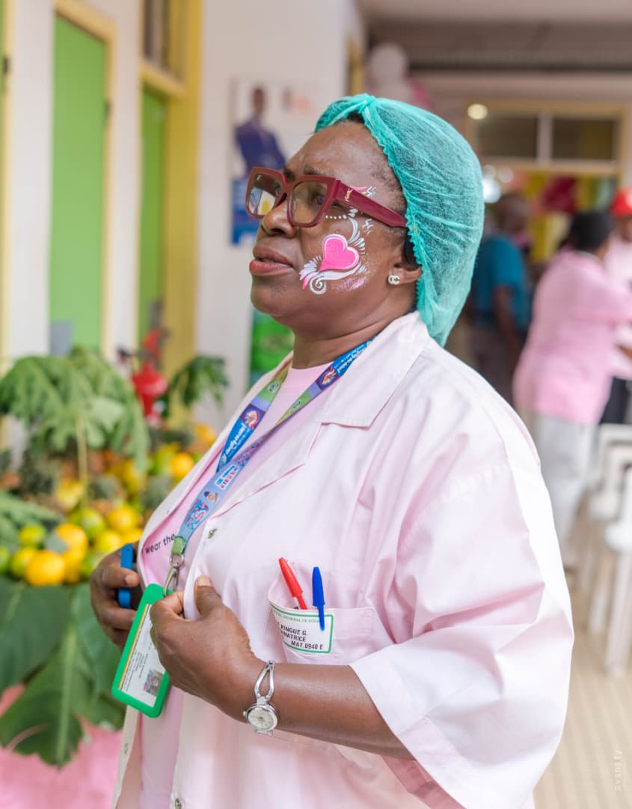
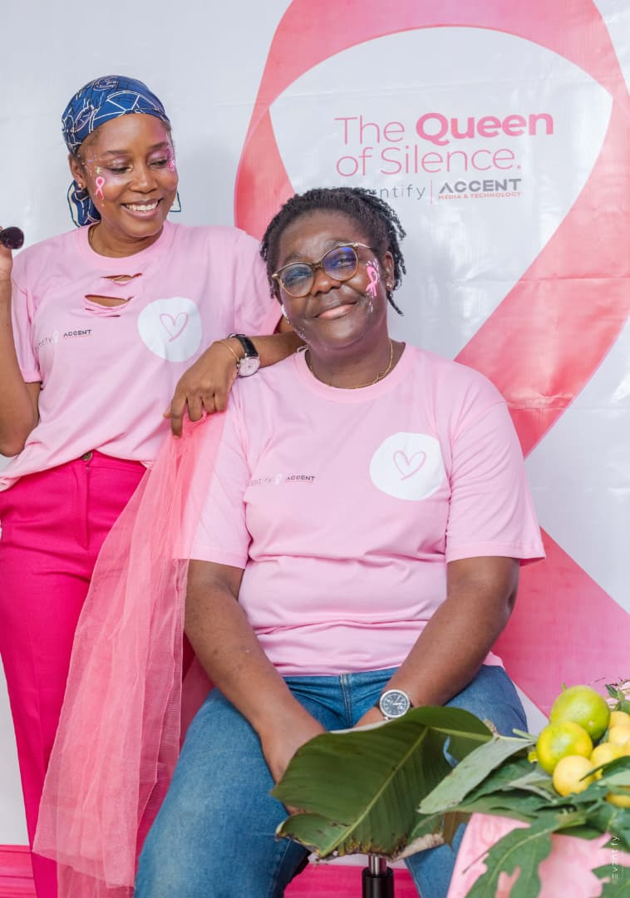
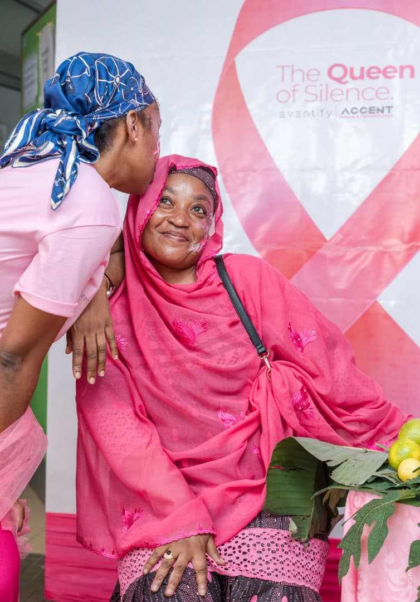

QUEEN of SILENCE
PRÉVENTION, DIGNITÉ & MOBILISATION
SOUTIEN AUX FEMMES FACE AUX MALADIES SILENCIEUSES
INITIATIVE RSE EVENTIFY
LIBÉRER LA PAROLE, SAUVER DES VIES
THE QUEEN OF SILENCE EST UN PROJET CRÉÉ POUR SOUTENIR LES FEMMES QUI AFFRONTENT DES MALADIES SOUVENT QUALIFIÉES DE « SILENCIEUSES » — LE CANCER DU SEIN, LE CANCER DU COL DE L’UTÉRUS AINSI QUE D’AUTRES PATHOLOGIES QUI TOUCHENT PROFONDÉMENT LE CORPS, L’IDENTITÉ ET LA VIE.
« AU-DELÀ DES CONSÉQUENCES MÉDICALES, NOUS AGISSONS POUR LIBÉRER LA PAROLE, VALORISER LA DIGNITÉ ET TRANSFORMER CHAQUE COMBAT EN UNE FORCE COLLECTIVE D’ÉCOUTE ET D’ACTION. »


MISSIONS FONDATRICES
Dépistage précoce et libération de la parole face au silence.
Les pathologies féminines silencieuses — cancer du sein et cancer du col de l'utérus — évoluent souvent sans bruit. The Queen of Silence agit en première ligne pour anticiper la maladie et désamorcer la solitude par le dialogue.
01
DÉPISTAGE PRÉCOCE & DÉTECTION ANTICIPÉE
- ✓ Encourager le dépistage régulier et une meilleure information médicale.
- ✓ Informer sur les signes précoces et faciliter l'accès aux examens cliniques.
02
LIBÉRER LA PAROLE & BRISER LES TABOUS
- ✓ Créer des cercles d'expression bienveillants pour surmonter peur et gêne.
- ✓ Permettre à chaque femme de partager son parcours sans crainte ni tabou.
MISSIONS FONDATRICES
Dignité retrouvée et mobilisation collective de la société.
Au-delà des conséquences physiques, ces pathologies bouleversent l'identité, la vie de couple et le lien social. Nous restaurons l'estime de soi et mobilisons familles, proches et soignants dans un même élan solidaire.
03
ESTIME DE SOI & RÉAPPROPRIATION IDENTITAIRE
- ✓ Accompagner les transformations corporelles et la perte de repères.
- ✓ Valoriser la force, la beauté et la dignité de chaque femme concernée.
04
MOBILISATION DES PROCHES & DE LA SOCIÉTÉ
- ✓ Sensibiliser familles, conjoints et collègues à l'écoute et au soutien actif.
- ✓ Transformer les épreuves individuelles en une immense force collective.

